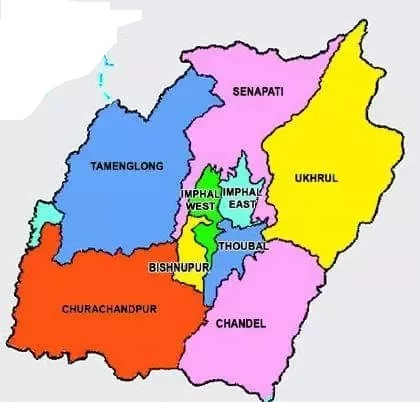

BACK
LET'S HAVE A LOOK AT THE TOUR MAP

WHERE TO VISIT , WHAT TO SEE?
SOME HOT PICKS(#HAVE_TO_VISIT)
- SENAPATI - BLESSED WITH NATURE'S BOUNTY ,SIMPLE YET INTRIGUING HIDEOUT, MAIN ATTRACTIONS INCLUDE : DZUKOU VALLEY, CHIRU WATERFALLS, MAKHEL CAVE
- IMPHAL - LUSH GREEN LANDSCAPES AND UNDULATING RIVERS OF IMPHAL
- TAMENGLONG - WHERE THE CLOUDS KISS THE MOUNTAIN PEAKS, LAND OF HORNBILLS, THARON CAVE
- CHANDEL - VARIOUS TRIBES THAT LIVE WITHIN THE CITY ON THE MOUNTAIN PEAKS
- LOKTAK LAKE AND SENDRA ISLAND - LARGEST FRESH WATER LAKE IN THE COUNTRY
- ANDRO - SHOWCASING THE GLORY OF THE LOCAL ARTISTS, MAIN ATTRACTIONS : SHANTHEIL NATURAL PARK, ECOLOGICAL PARK, KAINA TEMPLE
- LEIMARAM - TRIO WATERFALLS
SOME_OTHER_ATTRACTIONS
- THOUBAL - PLEASANT RELAXING WEATHER, TREKKERS PARADISE
- MOIRANG - SMALL TOWN NESTED ON THE LAKE BANK
- KHONGJOM - PLACE TO PAY TRIBUTE TO THE MILITARY
- UKHRUL - PLACE WHERE TRANQUILITY PREVAILS
- CHURACHANDPUR